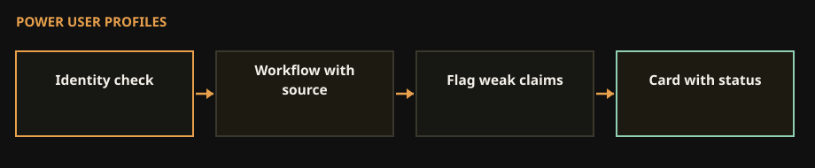
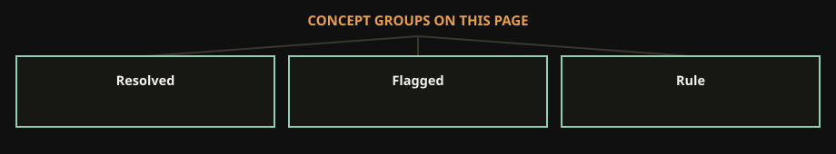

Power user profiles
Each card states an identity check, a workflow with a source, and a flag on weak claims. Two cards carry a clear gap flag by design.

Boris Cherny
Creator and head of Claude Code at Anthropic. Workflow: five terminal sessions plus five to ten web sessions, plan mode, shared CLAUDE.md, slash commands, phase subagents and a verify app step. See the Claude page. High for January 2026 workflow
Lauren Tan, Poteto
Identity resolved: Poteto is Lauren Tan. Past roles in sources: Meta, Netflix, Cursor, React core team. Role in November 2026 sources: Grok Bot engineering lead at SpaceXAI. Workflow: pstack playbooks, lint rules in place of doc notes, screen record proof, agent self merge, revert rate as governor.
Personal pull request counts conflict across sources: 1,150 in four days, 2,500 per month, 3,000 per month and 4,000 plus per month all appear, for distinct spans. This site prints no single count as a fact. Team talk numbers sit on the Grok page with a company report flag.
Codie Sanchez
Founder of Contrarian Thinking. Workflow: named specialist bots, finder to drafter to approval chain, distribution before code, lead magnets from unique data. Outcome numbers in her content stay self reported. Low for outcomes, Medium for patterns
Tibo
Identity: Thibault Louis-Lucas, handle tibo_maker. Past builds: Tweet Hunter and Taplio, with an 8 million dollar exit in interview summaries. Current builds in sources: Revid, Feather, SuperX and Outrank. Workflow: build tools for self first, one ship sprint day per week, large context prompts, AI draft with human polish, firm JSON outputs, high level APIs in place of self host work. Medium Low, one interview summary
Identity trap. Tibo is not the TypingMind founder. Tony Dinh built TypingMind as a solo founder. Two men, two cases. Do not merge both cards.
Dario Amodei
Co founder and chief executive of Anthropic. No personal workflow, config, prompt set or post set sits in sources for this build. Org claims about Anthropic code share sit on the Claude page with a secondary report flag. INSUFFICIENT_EVIDENCE for a personal profile
Matt Pocock
TypeScript educator, Total TypeScript. Repo workflow: grill, spec, tickets, test driven work, review. Shared words via a CONTEXT.md glossary and decision records stop agent drift. See the Cross-cutting page. High
Mayank Shah
Identity stays ambiguous. At least four men share this name in sources. Best workflow match: Mayank Shah of Shah Labs. His post flow: start hard tasks in Gemini with a custom Gem that builds firm prompts, then run Claude Code with a CLAUDE.md file, auto memory and a memory plugin, plus skills and plugins per session. Result claims in the post stay self reported, and the post leads to a paid offer.
Flag: no proof sits in sources that Shah Labs is the man in the user prompt. INSUFFICIENT_EVIDENCE for identity
Greg Isenberg
Chief executive of Late Checkout, host of the Startup Ideas Podcast. Two playbooks sit in sources.
Company brain: build a folder that onboards an agent as a sharp new hire. Six files cover buyers, offer and promise limits, brand voice by loved and rejected samples, founder views, and past campaign fails. Rule: agents add guesses to an evidence folder. A human alone promotes a guess to the company folder.
Agent spec: answer seven questions before a build. Wake trigger, context need, tool rights, solo act rights, approval acts, escalation rule, and success proof. Ship a minimum agent in draft and approve mode. Build a 50 sample eval set before scale work. Medium Low, summaries of his posts and podcast

Visual map of this page
Three views of one page: a Mermaid flow for work order, a markmap for concept groups, and a read guide for the flow.
Mermaid source, for offline read
flowchart LR
A[Supplied name] --> B[Identity check]
B --> C{Resolved?}
C -->|yes| D[Workflow card]
C -->|no| E[Card with gap flag]
D --> F[Confidence badge]How to read the flow diagram. Step 1: start at the left box. Step 2: follow each arrow to the next stage. Step 3: at a branch box, read both paths before a choice. Step 4: a loop arrow means work returns for one more pass vs a test.
Markmap: concepts on this page
- Power user profiles
- Resolved
- Cherny
- Tan as Poteto
- Tibo, split from Dinh
- Pocock
- Sanchez
- Isenberg
- Flagged
- Dario: org claims only
- Mayank Shah: identity open
- Rule
- Counts in conflict print as splits
- Resolved